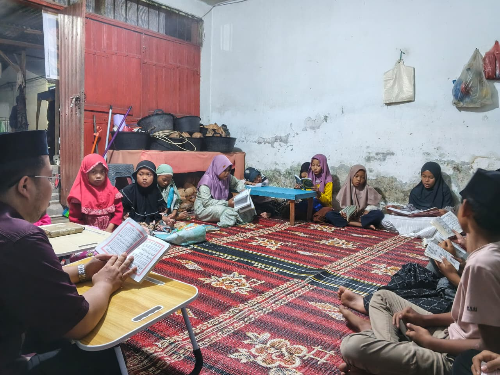

Mencetak generasi penghafal Al-Quran yang berkualitas, berakhlak mulia, dan siap menjadi pemimpin masa depan
Rumah Tahfiz hadir sebagai solusi pendidikan Al-Quran yang berkualitas

Rumah Tahfiz didirikan dengan visi mencetak generasi penghafal Al-Quran yang tidak hanya unggul dalam hafalan, tetapi juga memiliki akhlak mulia dan pemahaman Islam yang mendalam.
Sistem hafalan terstruktur dan terbukti
Bersertifikasi dan berpengalaman
Suasana belajar yang islami dan nyaman
Diakui dan terakreditasi
Berbagai program untuk semua tingkat usia dan kemampuan
Program dari jam 16:30 - 18:00
Program dari jam 19:00 - 20:00
Kami siap membantu Anda dengan senang hati